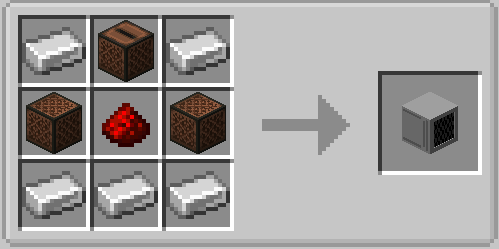

Speaker¶
The Speaker block plays notes, sounds, generated waves, and music discs from your graph. Place up to six speakers around one computer — one per side.
Crafting¶

The speaker faces you when you place it. Right-click it with a music disc to insert the disc; right-click it empty-handed to take discs back — the inserted one first, then one queued disc per click. Breaking the speaker drops the inserted disc and the whole queue.
Addressing a speaker¶
Every speaker node has a Face field (front by default). It selects the side of the computer
the speaker sits on: front, back, left, right, up, down (also north, east, south,
west, top, bottom). The node errors if no speaker is on that side.
The nine speaker nodes¶
Eight of them are triggers: they run when their Trigger input turns on or an event arrives.
| Node | What it does | Extra fields |
|---|---|---|
| Play Note | Plays one note-block note | Instrument (16 choices, default harp), Note 0–24 (default 12) |
| Play Sound | Plays any named sound | Sound ID (e.g. block.note_block.pling), Volume 0–4, Pitch 0.5–2 |
| Play Wave | Plays a synthesized waveform | Wave (sine, square, saw, triangle, noise), Frequency 55–3520 Hz, Volume 0–3, Attack 0–2 s, Decay 0–2 s |
| Play Sweep | Glides between two frequencies | Wave, From/To 55–3520 Hz, Duration 0.2–10 s, Volume |
| Play Disc | Starts the inserted music disc | Loop (restarts the disc at song end) |
| Play Sequence | Plays timed notes without a disc | Notes 1–16 (text steps like harp:12:0.5) |
| Stop | Stops whatever is playing | — |
| Eject | Spits the disc out | — |
| Speaker Status | Reports the speaker state | Outputs: has_disc, is_playing, is_looping, queued (updates every tick) |
Example — play a doorbell note when a button is pressed:
- Place a Play Note node, set Instrument to
belland Note to18. - Connect a button widget (or any boolean source) to Trigger.
- Set Face to the side the speaker is on.
Example — an alarm that alternates two notes: drive Trigger from a fast counter or pulse node and switch the note with an if branch.
Disc playlist¶
Right-click a speaker with a music disc to queue it behind the inserted one — up to 8 discs
wait in the playlist (Speaker Status reports them as queued).
- Play Disc starts the inserted disc; with the slot empty it pulls the first queued disc.
- When a song ends and discs are queued, the finished disc drops on the ground like a vanilla jukebox and the next queued disc starts.
- With Loop on, the playlist cycles: the finished disc joins the queue's end and the next one starts, forever.
- Empty-hand clicks and Eject remove the inserted disc first, then one queued disc per click — every disc stays reachable without playing the playlist through.
Note sequences¶
Play Sequence plays a little melody with its own timing — no disc, no clock nodes. Fill the
Notes inputs with instrument:note:seconds steps, top to bottom; empty inputs are skipped.
The seconds value after a note is the gap until the next one:
note_1: harp:12:0.5
note_2: bell:18:0.5
note_3: pling:15:0.5
plays three notes, half a second apart. Trigger (or an event) starts the sequence; Stop cancels a running one. Instruments and note range are the same as Play Note; each gap is 0–10 s. The underlying endpoint accepts up to 64 notes for custom node setups.
Envelopes, sweeps, and loops¶
- Attack / decay on Play Wave fade a tone in and out so notes do not cut off harshly. The envelope restarts the tone in short slices, so keep attack/decay at a few tenths of a second for the smoothest result.
- Play Sweep glides linearly from one frequency to another — risers, alarms, motors.
- Loop on Play Disc restarts the disc automatically when the song ends — with a
playlist queued, it cycles through the discs instead. The toggle applies immediately, even
while a song is playing, and survives world saves. Turn it off (or hit Stop) to end
playback; the Speaker Status node reports
is_looping.
One tone per speaker
Envelope slices and sweeps cut the previous slice before restarting, so overlapping wave tones on the same speaker (or the same waveform on several speakers) may cut each other. For polyphony, use one speaker per voice.
Useful limits¶
| Limit | Value |
|---|---|
| Note range | 0–24 (12 = A, the default) |
| Note instruments | harp, basedrum, snare, hat, bass, flute, bell, guitar, chime, xylophone, iron_xylophone, cow_bell, didgeridoo, bit, banjo, pling |
| Wave frequencies | 55–3520 Hz |
| Wave aliases | sin→sine, sq→square, sawtooth→saw, tri→triangle, white→noise |
| Envelope range | Attack/decay 0–2 s each |
| Sweep range | 0.2–10 s, sliced every 0.1 s |
| Simultaneous discs | One inserted + 8 queued (playlist) |
| Sequence | Node: 16 note inputs; endpoint: up to 64 notes, gaps 0–10 s each |
| Speakers per computer | Six (one per side) |
Timing is up to your graph: speaker nodes have no built-in wait — use a Delay node, drive them from a tick-based counter, or let Play Sequence handle the timing itself.